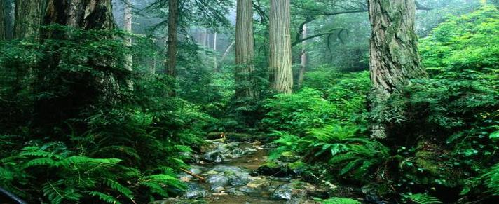

Minimize Environment Causes and Consequences of Crisis

Educating University Students to Beat Pollution

Sustainable Lifestyle-A trend to adapt Eco & Healthy Lifestyle


Transportation is an essential part of urban design and in creating livable cities. There are a number of beneficial forms of green transportation that support and enhance walkable urbanism. These green transportation options make our lives easier, reduce dependence on cars and oil,safer and less costly, help save the planet and make life more fun!

Education plays a crucial role in raising awareness of environmental challenges and shaping the attitudes and behaviours that can make a difference. A recently released Trends Shaping Education Spotlight looks at the role of education in both preparing and providing our citizens with the skills needed for a sustainable and productive future.

Green jobs are a fairly new concept and something you might be familiar with, or even heard of yet. It is about working for companies that are green and providing jobs for individuals interested in helping others save energy and reduce their carbon footprint. There are a variety of green jobs available now as well as those being introduced for future industries.

Organic gardening is more than simply avoiding synthetic pesticides and fertilizers. It is about observing nature’s processes, emulating them in your garden. And the most important way to do that is to understand the makeup of your soil and to give it what it needs. If anything could be called a ‘rule’ in organic gardening, it’s this: feed the soil, not the plant